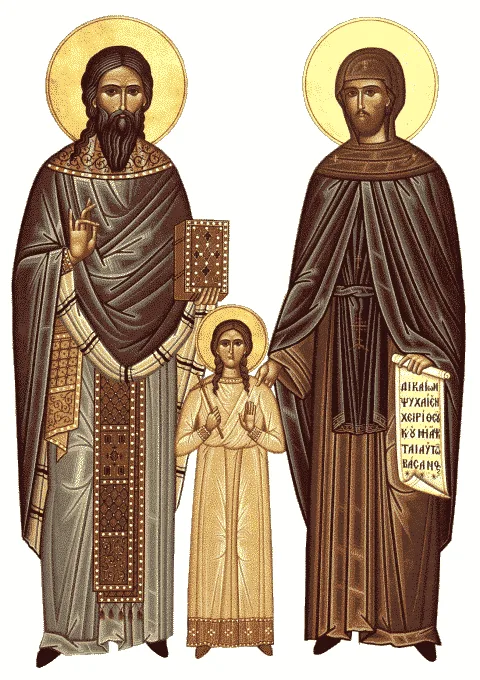

☩
ΙΕΡΟΣ ΝΑΟΣ ΑΓΙΟΥ ΡΑΦΑΗΛ
Άγιος Γεώργιος Λασιθίου
Ὡς φῶς ἡμῖν ὤφθησαν Ραφαὴλ μέγα
Ὁμοῦ καὶ Νικόλαος οἱ κεκρυμμένοι.
Εἰρήνη ἀθλήσασα σὺν τοῖς τοκεῦσι
Ἡμῖν ἤδη ἔγνωσται θαύμασι ξένοις.
Καρυῶν ἀθλήσαντες Μονῇ τῇ πάλαι
Τῆς ἄνω ἐπέβητε Μάρτυρες δόξῃς.
Ὁμοῦ καὶ Νικόλαος οἱ κεκρυμμένοι.
Εἰρήνη ἀθλήσασα σὺν τοῖς τοκεῦσι
Ἡμῖν ἤδη ἔγνωσται θαύμασι ξένοις.
Καρυῶν ἀθλήσαντες Μονῇ τῇ πάλαι
Τῆς ἄνω ἐπέβητε Μάρτυρες δόξῃς.